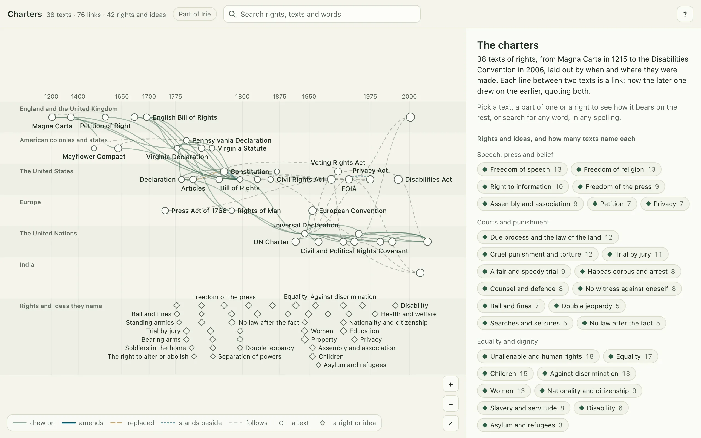
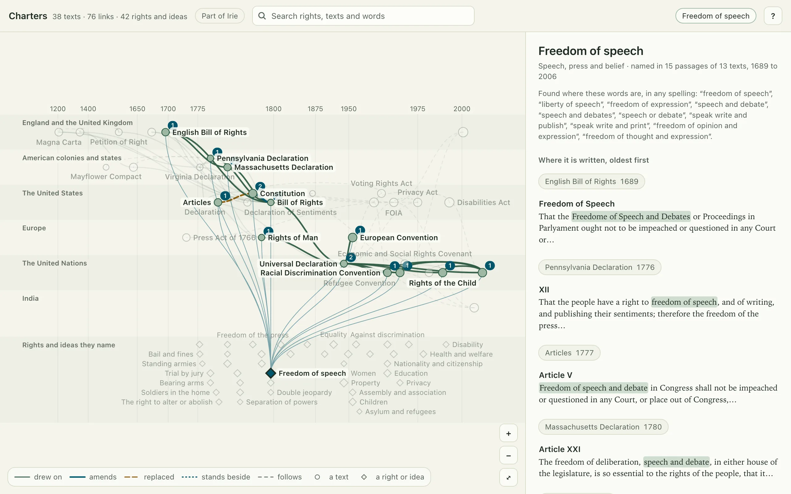

Live · free · open source
The Charters Graph
Thirty-eight texts of rights, as a map to explore.
From Magna Carta in 1215 to the Disabilities Convention in 2006, with the Declaration of Independence, the Constitution and the Bill of Rights among them. The texts lie on a timeline by when and where they were made, joined by 76 links that say how each later text drew on an earlier one. Pick a text, a part or a right, and the map lights what it bears on; the card beside it gives the words.
Free, in your browser, on a phone or a computer, with no account. Its links and rights are a reading of the texts, each resting on the words it shows, and not legal advice.

The map
Pick a right, and see where it travelled
Pick any of the 42 rights and ideas, and the map lights every text that names it and the links between them. The card gives each passage where its words are, oldest first, with the words lit, in the text’s own spelling.

How it works
Pick a text, a part or a right, or search
-
Pick a text
The map lights its links and the rights it names. The card gives its words, each link’s sentence with the passages it quotes, and a tree of its parts.
-
Pick a part
Any of 1,577 articles, sections, amendments and chapters. The map leads to the passages its links quote, in the texts they come from.
-
Pick a right
Any of 42, in six families, from speech, press and belief to government by consent. The map lights every text that names it, with a count.
-
Search in any spelling
Rights, texts, parts and passages. Type “choose” and it finds the parchment’s “chuse”; “cruel and unusual” finds 1689’s “cruell and unusuall”.
Word for word
Each link rests on the words it quotes
A link says in one sentence how a later text drew on an earlier one, and most quote both texts word for word. The map pins each link to the passages it quotes, so the Eighth Amendment leads to the English Bill of Rights’ bail clause, the Body of Liberties’ liberties 42, 45 and 46, the Northwest Ordinance’s Article 2 and the Universal Declaration’s Article 5.
- The very same words, tied. The Bill of Rights’ ten amendments and the Constitution’s first ten. “Article the second”, proposed in 1789 and ratified in 1992 as the Twenty-seventh Amendment. Virginia’s bail clause of 1776 and the English Bill of Rights’ of 1689, spelling aside.
- Rights found by their words. A right is shown where its words are in a text’s own passages, not in headings or notes added to it, and the page shows the words that found each passage.
- A reading, not legal advice. The links and the rights are a reading of the texts. Each rests on the words shown, so you can weigh it yourself.
![The Charters Graph on a phone with the Eighth Amendment picked. On the map, lines run from the Bill of Rights to the Body of Liberties’ liberties 42, 45 and 46, the English Bill of Rights, the Northwest Ordinance’s Article 2 and the Universal Declaration’s Article 5. Below, the card: the very same words as Amendment VIII in the Constitution, 1787, then the links that quote it, first the Body of Liberties of 1641, its quotations lit, such as “No man shall be forced by Torture to confesse any Crime against himselfe”.](../../img/charters-graph-eighth-amendment-on-a-phone-dark.webp)
Where it stands
Live on its own site, and in Irie
Works today
Thirty-eight texts, 76 links, 1,577 parts and 42 rights and ideas, on a timeline in six lanes, from England and the United Kingdom to India. Search in any spelling. Parts with the very same words, tied. Back and Forward walk your picks. Light and dark, on a phone or a computer.
In Irie
In Irie’s Mac app, from version 1.11, turn on the Charters plugin and it is Window › Charters Graph. The plugin also gives Irie’s agents the texts, to quote from them rather than from memory. The map is on Irie’s site as well.
Next
The signers as people on the map. And the map in Irie’s phone app.
Sources
Word for word, from the bodies that keep them
The words, spelling, capitals and punctuation are kept as the source has them, so you can check any passage there.
- The texts
- Word for word from the bodies that keep them: the National Archives, the United States Code, legislation.gov.uk, the United Nations and others, each checked against other copies. Irie’s verification.md says what each text was checked against and what was found, and gives each file’s SHA-512.
- The links, parts and rights
- A reading of the texts, each resting on the words it shows. Irie’s proposal for the charters says how the map finds them, under “The explorer”.
- Credits
- The United Kingdom’s texts contain public sector information licensed under the Open Government Licence v3.0. Sweden’s Press Act of 1766 is Ian Giles and Peter Graves’s translation, under CC BY 4.0. Each text’s card on the map states its terms.
- The code
- Irie’s, under the Apache License 2.0: Irie’s Charters plugin makes the page, one file that loads nothing from elsewhere, at github.com/irie-people/charters.
- This page’s screenshots
- Shared under CC BY 4.0, with the credits above.
Questions
What people ask first
- Is it legal advice?
- No. Its links and the rights it finds are a reading of the texts, and each rests on the words it shows, so you can weigh it yourself. For a legal question, ask a lawyer.
- Where do the texts come from?
- From the bodies that keep them, such as the National Archives, the United States Code, legislation.gov.uk and the United Nations, word for word, each checked against other copies.
- Can I use the texts?
- Yes, on each text’s own terms, which its card on the map states and Irie’s PROVENANCE.md lists. Give the credits above when you use the United Kingdom’s texts or Sweden’s Press Act.
- Do I need an account, or to install anything?
- No. It is one web page that runs in your browser, on a phone or a computer, and loads nothing from elsewhere.
- What does it cost?
- Nothing. It is free to use, and its code is open source under Apache-2.0, as part of Irie.
More from CLI ’n’ Amen co.
-
Open source · version 1.0
Irie
The app our agents run in: every AI coding agent you have, side by side in one calm view. Free, for Mac and Linux.
-
Live prototype
What’s that muscle?
Point at the body and it names the muscle. Then walk anatomy as a graph and in 3D, and hand a client their exercises.
-
In development
Canopy
One checkout on a vendor’s phone for every way a customer pays, and one ledger at closing. For market stalls and food trucks.
Pick a right, and follow it.
The map is free, in your browser, on a phone or a computer.